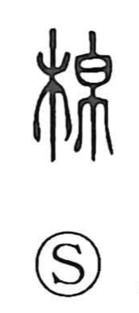

綿

Uncategorized
Kun: wata | On: men
cotton ・ floss ・ to continue
Explanation
The character was originally written 緜, combining 帛 (silk cloth) and 系 (thread) to evoke the soft floss drawn from silk. The Setsumon gloss, “running in a line over a short span,” captures the image of fibers being spun and joined into a continuous thread; hence the word’s association with cotton-like floss and, by extension, with continuity, as in 綿綿 “lasting on and on.” In antiquity it referred to silk floss; raw cotton was a later import from the south. Relatedly, 棉, formed with 木 and 帛, specifically names cotton and the cotton plant.